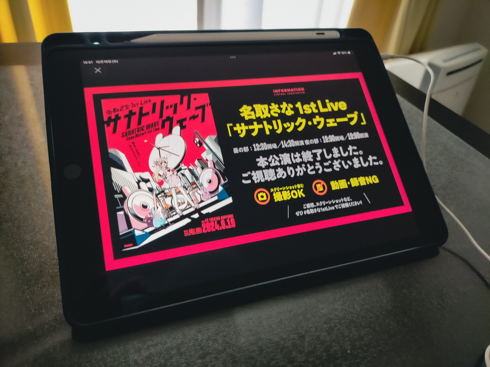

名取さな1stLive（昼・マルチアングル）感想
(更新)

こんにちは。
この記事は「名取さな1stLive」、もとい、「サナトリック・ウェーブ」を諸般の事情により約1か月遅れで観ることになった私の感想になります。（…というか、書き終えてから見返すと、いまの自分の気持ちを整理するために書いている節もあったので、かなり長い文章になってしまっていますし、前書きも長くなってしまい、もはや感想というよりは長い独り言みたいになっていますね。）
以下、ネタバレを含みます。
背景
まず、やっぱり観れて良かったです、本当に。私は最近まで現実世界のタスクが非常に多く、さらにはそれは重いものでもあったので、そもそも当日は観れず、もしかするとアーカイブ配信期間中にも観れないのでは…？という状況でしたが、何とかタスクをこなし、観れる時間を見つけられました。いやはや…。
また、私は最近（今年の8〜9月くらいから）名取さなさんの配信を観るようになったばかりであり、お恥ずかしながら、ライブ開催当日ですら、名取さんのこれまでリリースしている曲をまだあまり聴けていなかったり、さらにはこれまでに行われたイベントの映像をまだ1つも観られていなかったりするという感じでした。それでも、このライブが開催されると知り、ライブの際の心構えについての配信や、ライブ前々日配信も観ましたし、やはりライブにも行きたかったのですが、私はそのとき（現在もですが）受験生という立場にあるため、特に平日はそういった時間はとれませんでした。そして当日を迎え、高校の授業の休憩時間に「あと数分で、東京の六本木ではライブが始まるのだなあ」と思いGoogle検索で「名取さな」と調べてみると（学校のiPadにはフィルタリングがかけられており、私はそれを故意に突破しようとはしていないため、いつも学校ではGoogle検索のリザルトに表示される数ツイートから情報を追っています）、表示された数分前のツイートには「ゲ（略）」とあり、面白かったです。そしてその日は、500kmくらい離れた場所で行われているライブに想いを馳せつつ、授業を受けました。そして家でTwitter（X?）をみていると、トレンド1位（！？）になってうんデリの呪縛から解き放たれてたり、夜公演も無事に終了した（よかった〜）ことを知ったり、アンコール（！！？）があったことや、新曲（！！！？）が発表されたり、ライブT（！！！！？）の衣装が披露されたことなどを知り、かなりうおっていました（「うおおお（略）」と言うことを「うおる」と形容している、と解釈してこの表現を使ってみました）。
そんな感じで当日を過ごしていたわけですが、実際には私はまだ曲をあまり聴けてない状態であるということを思い出し、その日から特に数日間は、いとまを見つけては曲を聴くことを繰り返していました。正直、私はそれまでには「モンダイナイトリッパー！」や「パラレルサーチライト」くらいしか聴けていなかったのですが、「PINK,ALL,PINK!」や「アニマルま〜る」、「オヒトリサマ」などを聴き、名取さんにはこんな表情もあって、こういった表現もしたりするのか〜と驚きましたし、特に「いっかい書いてさようなら」を聴いたときの衝撃はすごかったです。長くなりますが、以下に書きます。
初めてこの曲を聴いて、名取さなさんの歌、歌詞、メロディーなど、本当に全てがめっちゃ良くて、良すぎて悶えて、少し泣いたりもしました。曲を再生した瞬間から、椅子の上でうずくまってしばらく動けないようになったり感情がぐわーっと動いたりするのは初めてで、自分でもかなり驚きました。まずはメロディー。浮遊感のある電子音が全体にあって、ポップで、でも落ち着いていて。サビの部分の音階の変化のしかたや、一瞬音が消える部分に、特に強く感情を揺さぶられました。歌詞もすごく好きで、アイドル的で、その一方でコミュニケーションをする上での難しさやインターネットとの付き合い方についても述べられている、という風に私は解釈しているのですが、特に「おんなじ色が〜とるわけじゃないらしい」の部分では、現実世界において、またインターネット上において、相手とコミュニケーションをとる上で気をつけるべきことが非常に端的に描かれているように思います。そのようなことが、かたい言葉でなく、こうした言葉に敷衍されて、さらには歌という形でこちらに届いている、そういった側面から見ても、やっぱり歌ってすごいなと思います。そして何より、名取さんによる歌唱。音への声の乗せ方や、歌詞に合わせた感情表現がかなり好きです。というか、そもそも名取さなさんが歌っている、という時点で「うおおお（略）」となる、といった方がいいのかもしれません。（語弊があるかもですが、）普段は配信やTwitterでワイワイ騒いでたりするけれども、その一方ではこうしてアーティスト然として歌を歌っている、というギャップに惹かれたり、また魅力に感じたりする、というのが本質的な部分なのかも。名取さん自身はきっと多大な努力をしていて、様々な側面からその「名取さな」という存在をさらに磨いているのだろうと思います。配信やTwitterでの話は面白いし絵が上手くてかわいいしかっこよくて、感情や伝えたいことを歌に乗せて歌ったりもしている、そういった姿は名取さん自身によって生み出されている。そうした、なんと言いましょうか、多面的で唯一性がある存在であるというところが、本当にすごいし、魅力に感じられ、惹かれています。
話がそれましたが、とりあえずそんな感じで曲を聴いていきました。（「ゆびきりをつたえて」はTwitterやnoteとかでﾁﾗｰｯと情報を得て、大切な曲なのだと知ったので、まだ聴いていません。2023年のばくたん。をアーカイブで観るときに初めて聴くことになると思います。）そして、ほぼ全ての曲を聴き終えたときには既に「ソラの果てまで」がリリースされていました。ここで、「この曲はライブのアーカイブ映像にて初めて聴くようにしたい」という気持ちと、「アーカイブの配信期間を考えると観れないかもしれないし、どちらにせよ早く聴きたい〜」という気持ちがせめぎあい、結局ﾁﾗｰｯと聴くだけにしておきました（この段落でのﾁﾗｰｯととは、パラノマサイトの初めの配信の冒頭部分で名取さんが言っていたようなニュアンスで使っています）。
時は流れ、もうすぐライブから1か月が経とうとしているとき、やっと抱えていたタスクが一段落し、また様々なことが重なって学校が午前中で終わる日が発生し、ついに時間をとることができました。本当に良かった。そうして、晴れてアーカイブ配信期間が終了するより前に観る機会を得ました。
ライブ
当日、緊張しつつも無事に昼の部・マルチアングルのチケットを購入し、家で昼食をとりました（ファミマの「スモークサーモン ペッパーおむすび」、とても美味しいです）。チケットを買ってからは、昼食を食べる前もその最中も後も、感情が高まりすぎて少し踊ったりしていました（？）。椅子に座って机にiPadを置き、スマホを取り出してまずはライブ当日のTwitterでの名取さんやエビ、そしてせんせえたちの動きをチェックして当日の雰囲気を味わい、いよいよ観るときがきました。
再生ボタンを押してからは、しばらくはマウスコンピュータや文化放送、ZONeのCM、そして那須どうぶつ王国のPVが流れ、さながら映画館で上映を待っているときのようで、とてもワクワク感がありました。特に那須どうぶつ王国の映像はとても良くて、もともとあった訪れたい気持ちがさらに強くなりました（遠方なのでまだしばらくは厳しいですが…）。さて、そういう感じで待っていると、西郷・R・いろりの声が！（もごパ2もいつか観たい！）。「ゲ（略）」にも触れられていて、うおお本当にその場で喋っている！となったりしました。せんせえたちは話のひとつひとつに盛んに反応していて楽しそうだったので、私もTwitterのツリーでいろいろ反応を呟いてみたりしました（現在は削除済み）。
そしていろりがフェードアウトしてしばらくするとカウントダウン、そして惑星ループが始まり、手元にペンライト代わりに置いていた扇子を持って振ってコールしつつ、歌を聴きました。私はこれまで音楽のライブには一度も参加したことがなく、またインターネット上で観たことがあるのはライブのワンシーンを公式が切り抜いたものであったりしたので、実質的にはこれが（アーカイブでの参加ではあるけれども）初めてのライブへの参加となりました。生バンドでの演奏で、ライブハウスの照明や映像などの演出も豪華であり、一気に雰囲気に呑まれました。今回、照明を消して暗くした部屋にiPadを置き再生しイヤフォンで聴く、そして手にはペンライトの代わりに扇子を持つというスタイルで臨みましたが、画面の向こうに広がる空間に引き込まれ、いつの間にか視界からは目の前の机や部屋すら無くなり、ただ画面が見えるという状態になっていました。それほどに没入感があり、音、映像、そして雰囲気も届いていました。また、今回のARカメラの演出も本当に素晴らしくて、実際の会場のライトや後に出る火花すらも写っていて、さながら名取さんがあの場所に立っているかのように感じられ感動しましたし、名取さんの上半身が映ることにより、歌のなかでの感情表現がより伝わってきて、とても良かったです。直前まで開発してくださったスタッフの方々に圧倒的感謝…！
そして、ファンタスティック・エボリューションでテンションを上げていき、PINK,ALL,PINK!ではアイドル然とした姿にコールを送り、MCを聴いてせんせえ方と名取さんのコミュニケーションを楽しみ、だじゃれくりえいしょんでは王のビームを浴び、アニマルま〜るではダンスするうさちゃんせんせえを観測、続いてのMCではやしきんさんに感謝を叫び、ごほうびトキメキモードではおいしいご飯を想像し、わたしたちのクエストという素敵な曲を聴き（私はブルアカ未履修です…）、初めて知ったときのように新曲に驚いて初めて聴くノーゲスト、イン、ザ、テアトロ。の音に浸って、MCパートでミツキヨさんに感謝しつつ、続くオヒトリサマで一転した雰囲気と姿に酔い、アンハッピーリフレインと八月、某、月明かりではさらに感情が揺さぶられました。次にあったMCでは、歌を通じてなら言いづらい負の感情も伝えることができること、音楽活動はこのライブが終着点ではなく、これからもずっと続いていくということを聴きました。そして「ソラの果てまで」を聴き心打たれて、その後のMCパートでは声援を送りました。「残り2曲」という言葉を聴いて「え〜」と言うせんせえ方を暖かく見守り、パラレルサーチライトが始まってバンドアレンジのすごさに圧倒されたり輝く火花に驚いて、足跡でもたくさんコールをして、跳びました。そしてアンコールを叫びましたが、その次に起こったコールが何なのか本当に聴き取れず、？となっていました……（「な、と、り！」の部分です。「アンコール」と音が似ていることもあり、かなり混乱していました…）。しばらくしてギターの音が鳴ってせんせえ方の動きが一瞬止まり、少し経って、ライブTにアレンジを加えた衣装に身を包んだ名取さんが舞台に舞い戻り、モンダイナイトリッパー!(Mitsukiyo Remix)が始まりました。次のMCではスクリーンショットを20枚くらい撮り、様々な告知に「うおおお（略）」となりました。続いて、いっかい書いてさようならが始まり、冒頭でのバンドメンバー紹介でのそれぞれの方のパフォーマンスを観てかっこよ〜と思い、本当にこの曲で終わりなのだなと寂しさを感じつつ、立って扇子を振ってコールしながら聴き、銀テ（金）を（イメージで）浴びました。そしてバンドメンバーの方々、マニピュレータの方にありがとうと叫び、続く名取さんの言葉のなかでも特に「インターネット〜〜〜〜、ありがとう！」の部分に心を貫かれました。そうして、ライブは大歓声のなか終了し、画面が切り替わって「本公演は終了しました。ご視聴ありがとうございました。」という言葉をとともに、タイトルとビジュアルが映し出されました。
総じて、本当に最高！！！！！！！！！！！！（あと50個くらい！が続く）なライブでした。前述のように、私はこれまでには一度も音楽のライブには参加したことがなかったのですが、観る前に想像していたものを遥かに超える、とても壮麗な演出に驚き、感動し、圧倒されました。配信において、会場に十数個もしくはそれ以上ありそうなカメラが本当に上手に操られていて、特にカメラの切り替えのタイミングが本当に秀逸で、臨場感がさらに増幅されました。また、特に「オヒトリサマ」では、冒頭の赤く光ったり暗転したりするところや、上がった煙にレーザーが当たってギラギラ光っている場面がとてもかっこよかったですし、「パラレルサーチライト」で火花が上がった場面で清水"カルロス"宥人さんが映ったシーンや、バンドメンバー紹介の際の樋口幸佑さんのシーンなど、バンドメンバーの方々の映し方も秀逸で、とても良かったです。そして、やはり名取さなさんの表現力が本当にすごかったです。まず、あんなに連続して表現を崩さずに歌えるのもすごいですし、声だけでなく身体も合わせてその歌を表現していて、歌いながら踊っているのはもちろん、特に「だじゃれくりえいしょん」の2度目の「テクニカルトークでワハハ(ワハハ)」では、ARカメラ視点で映ったときに体を前に傾けて「ワハハ」と歌っていて、立体的にも表現されていて。こういった、ただ平面の映像では分からないような側面を見ることができるという点においても、今回ARカメラがあったのは本当にありがたかったです。また、「八月、某、月明かり」ではプロと見紛うくらいに表現力が卓越しているように感じました。感情が歌に乗って、確実にこちらに届いていました。MCも上手で、普段の配信のときのような親しみやすいテンションで話していて、せんせえ方とのリアルタイムのコミュニケーションは難しいものでもあると思いますが、そこを上手くいなしたり躱したり、盛り上げたり感謝を告げたり、静かに心のうちを明かしたりしていて、より「名取さな」という存在を実感しました。アンコールではｷｭｰﾄなアレンジを加えたライブTで登場したり、手でサインをつくってポーズをとったりするなど、名取さん自身がファンだそうであるアイドルの行動や仕草を取り入れていたり、MCの際にはせんせえ方をたくさん指さしたり、「ソラの果てまで」の「作詞は…」と言うときにニコッと笑って自身を指さしたりと、そういった工夫や仕草も名取さなさんらしくて、他にはない唯一性があって、本当にすごいなと思いました。
今回のライブでは、名取さなさんの様々な表現を観て聴くことができ、本当に良かったです。名取さなさんの存在を知って配信のアーカイブを観始めたときや、楽曲をサブスクリプションサービスで聴いていたときに感じた印象とはまた異なる、「名取さな」という存在の側面を、観て、聴いて、感じることができました。ただ、やはり私はまだ名取さなさんについて知り始めたばかりであるので、私が今回感じた印象は、これまで幾年にもわたり応援してきたせんせえ方が今回のライブで感じた印象とはかなり異なるものだろうと思います。すなわち、これまでの、そのせんせえ方による応援がこうしたライブに結晶化されて、これまでに幾千回、もしくはそれ以上の回数、名取さなさんの楽曲をCDもしくはサブスクリプションサービスで聴いてきたり、名取さんにお手紙を出したり、もしくはこれまでの名取さんの配信を観てきた、せんせえ方の経験に、重なる部分があったりしたことと思います。そうした、幾年にもわたる輝きを私がこれまで追ってくることができていなかったのは正直本当に悔しいですし、幾年にもわたり応援してきたせんせえ方が羨ましいです。私はこれから、過去の配信やイベントのアーカイブを観たり、楽曲を聴いたりして、名取さなさんについてもっとよく知ろうと思います。そして、私はこれから、楽しいの先陣を切ってソラの果てまで歩んでゆく名取さなさんを、全力で応援し続けます。
最後になりますが、今回の「名取さな1stLive」もとい「サナトリック・ウェーブ」に関わった全ての方々に感謝を申し上げます。本当に最高なライブをありがとうございました！